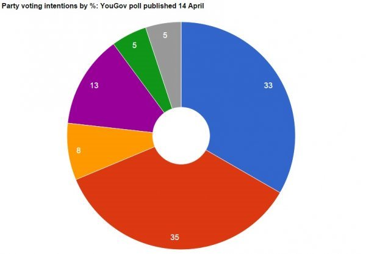

2015-05-02 05:04:00
我在去年九月的《美國的歐洲代理人板塊重整》提到英國在2014年做了個外交政略大轉彎，從美國在歐洲的代理人變成了中國“在歐洲的最好朋友”。六個月後，英國首相David Cameron以率先加入AIIB做為投名狀，用行動證明了他的誠意。既然已經與美國撕破臉，此後當然是義無反顧；這對中共的戰略佈局有極大的助力。例如IMF若是仍然忽視中國，那麼就如AIIB取代了World Bank一樣，中共也可以成立一個替代性組織，而舉世都會假設英國必然加入。也就是說，光是英國沒有照會美國或德國就加入AIIB的先例，已經足夠讓除了美日的西方國家被預期會爭先恐後地支持這個可能的新組織，所以IMF現在才會緊張到準備用史無前例的特殊手段繞過美國的否決權，無論如何必須讓人民幣在今年底前加入SDR（Special Drawing Rights，這是IMF的合成貨幣，是世界目前最接近一個理想中的全球貨幣的美元替代品）。如此不戰而屈人之兵，正是中國傳統的戰略思維。
不過英國的保守黨政府在2010年上台之時，做了一個歷史性的改革：原本英國這個議會制老祖宗向來的規矩是一任政府最多可以做五年，新選舉的日期卻不是確定的；首相在議會任滿三年之後，就可以隨時決定辦選舉。所以過去幾百年來，議會制下的執政黨一直有一個很大的優勢，也就是考慮到經濟上下波動和民意時好時壞，執政黨可以在任期的最後兩年中挑最有利的時機來辦新選舉。像日本的安倍就是怕他的經濟政策的惡果即將慢慢浮現，於是在2014年十二月提前兩年解散國會，重新獲得了另一個完整的任期。這個規則有利於政府與政策的延續和穩定，但是對在野黨很不公平，所以Cameron上任之後就把幾百年來的傳統廢除了，改用美國式的定期選舉制，下一個選舉定在2015年五月7日（提前大選還是可以的，但是必須有2/3下議院同意）。
時光荏苒，2015年轉眼就到了。Cameron這任首相雖然沒有做得震古爍今，也應該可以算是中上的了。在歐洲的主要經濟體中，英國從金融危機復甦得最為成功，過去四年的GDP成長率甚至略高於德國。在外交政略上，Cameron也不是省油的燈，有超人的見識和膽氣，一舉丟開了舊有的“America's Poodle”（“美國的哈巴狗”）稱號，毅然決然地轉投新霸主的陣營。但是一般民眾是無知而非理性的，即使在最老牌的民主國家也不例外：不但喜新厭舊是人性的趨向，而且除非是雷根這樣的超級作秀大師，否則選民自然而然就會有功不賞、無過照罰（賞罰分明是領袖人才的特質之一；依定義一般民眾就不可能是領袖材料，可是民主制度就偏偏讓他們來做最重要的賞罰決定）。Cameron是貴族出身，有點兒書呆子氣，對市井小民來說，他是完全談不上“親民”的（這是我對民主制度另一個百思不解之處：領袖的責任是為國家做正確的決定，“親民”和他的適任性有什麼關係？反而越是不務正業、拼命作秀的，越是為了遮掩無能或貪腐這類的大問題），所以在選前幾週的民意調查裡，保守黨還是稍微落在工黨之後。

2015年四月14日的民意調查結果：藍色是保守黨，紅色是工黨，橙色是自民黨，紫色是獨立黨，綠色是綠黨，灰色是蘇格蘭國家黨。請注意，蘇格蘭國家黨雖然只佔全體選民的5%，卻因它的支持者集中在一個地區，所以很有可能會拿到約9%的席次。而其他的小黨反而因為單一選區制，席位比率會遠低於選票比率。
其實在過去幾年，英國政壇除了改換選舉制度之外，還經歷了史上少有的巨大變局：在左派那方面，原本蘇格蘭是工黨百年來的大本營，但是雖然去年的獨立公投失敗，新成立的蘇格蘭國家黨（Scottish National Party）今年必然會從工黨奪走所有那裡的席次，等於把工黨一分為二。在右派方面，聯合王國獨立黨（UK Independence Party）靠激進的反歐宣傳強勢崛起，也應該會把保守黨的傳統席位一分為二。換句話說，一向在歐洲算是相對穩定、大致由兩大黨輪流單獨執政的英國，也開始轉為南歐式的多黨分立局面；所以從事後諸葛亮的觀點來看，Cameron的選舉制改革，時機挑得很糟糕。總而言之，五天後的這場選舉有六成的機會是左派獲勝，那麼工黨就必須和蘇格蘭國家黨成立聯合政府；保守黨的機會有四成，除非不得已，應該會繼續與自由民主黨（Liberal Democrats）聯合主政。
從中共的立場來看，Cameron已經是它“在歐洲的最好朋友”，所以當然他連任是最穩妥的結果。不過Cameron已承諾在2017年舉行是否退出歐盟的公投；雖然他個人是反對退出的，但若是保守黨內的激進派和聯合王國獨立黨在公投裡勝出，則英國對中共的外交價值將會有所縮水。另一方面，如果是工黨上台，雖然工黨是極度反對退歐公投的，但是蘇格蘭國家黨卻會極度希望英國退出歐盟，則蘇格蘭就會有藉口再搞一次自己的獨立公投（還記得我在《無知與短視的後果》裡提到的，“和平轉變即使是多數決也没有決定性”嗎？）。在野的聯合王國獨立黨也會因保守黨的下野而靠吸收後者的激進派來繼續膨脹，裡應外合之下，工黨政府是否能一直拒絕公投，實在很難說。不論如何，一個新的工黨政府必須與蘇格蘭國家黨做同床異夢的夥伴，那麼它在2020年連任的機會就不太大了。此外不但工黨領袖Miliband很有可能延續保守黨的外交政策，而且Cameron的繼任人選非常可能是他的副手，即現任的英國財經總長（Chancellor of The Exchequer）George Osborne。Cameron的親中政略就是出自Osborne的堅持，而他在2020年可能成為新首相。所以中共在這場選舉中，應該沒有成為大輸家的機會。